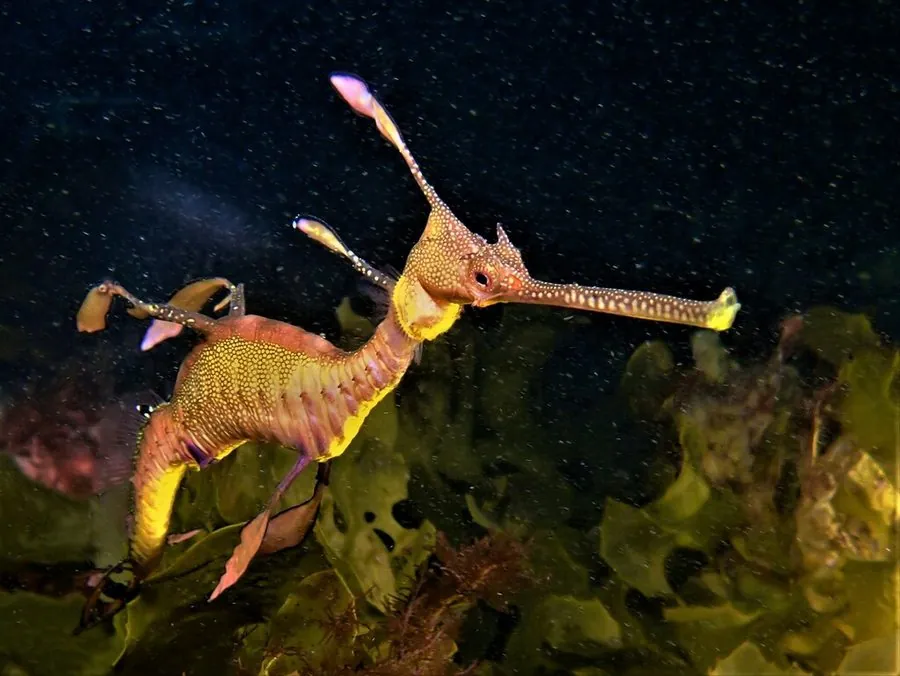

鱼类 · 动物界
草海龙 Phyllopteryx taeniolatus

身体细长、两侧生有叶状附肢的海龙，游动缓慢，仅分布于澳大利亚南部和塔斯马尼亚的温带海藻林。
- 分类
- 门脊索动物门纲辐鳍鱼纲目海龙目科海龙科属草海龙属
- 栖息环境
- 温带沿海的海藻林、海草床和岩礁区，水深通常不超过 50 m
- 地理分布
- 澳大利亚南部和塔斯马尼亚沿海
- 保护级别
- 暂无评估；澳大利亚将其列为受保护海洋鱼类
物种志
草海龙体形细长，像一条带叶的鞭子，身体两侧和背部生有叶状附肢，但没有叶海龙那样繁密。它的吻部管状，背鳍小，靠快速摆动背鳍缓慢游动。体色多为红褐、黄褐或紫褐色，身上常有淡色斑点。成体体长一般 30–45 cm。
草海龙分布于澳大利亚南部和塔斯马尼亚的温带沿海，栖息在海藻林、海草床和岩礁区，水深通常不超过 50 m。它用管状吻部吸食糠虾等小型甲壳类，常停在海藻间随水流摆动。繁殖时雌鱼把卵产在雄鱼尾部下方的育儿区，由雄鱼孵化。草海龙对海藻林退化和水质变化敏感，也受到观赏贸易的采集压力。目前尚无明确的 IUCN 评估，澳大利亚将其列为受保护海洋鱼类。
形态与习性
- 食性糠虾等小型甲壳类
- 体长一般 30–45 cm
- 外形身体细长，两侧和背部有叶状附肢
- 繁殖雌鱼产卵于雄鱼尾部育儿区，由雄鱼孵化
- 游泳靠快速摆动小背鳍缓慢前进
- 威胁海藻林退化、水质变化和观赏贸易采集
趣味知识
- 草海龙的叶状附肢比叶海龙稀疏，身体也更细长。
- 它游泳很慢，常停在海藻间随水流轻轻摆动。
- 草海龙和叶海龙一样，由雄鱼携带卵直到孵化。